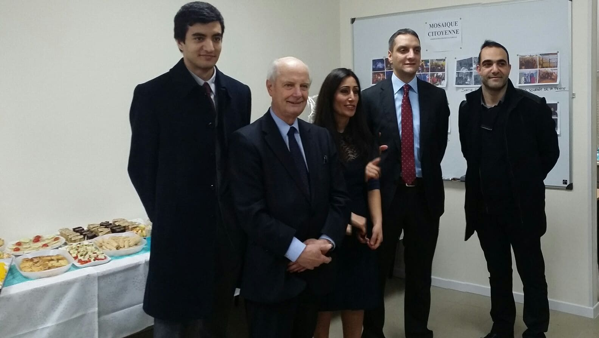
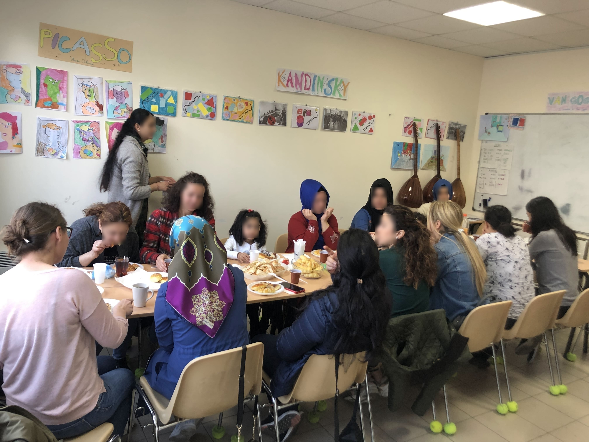
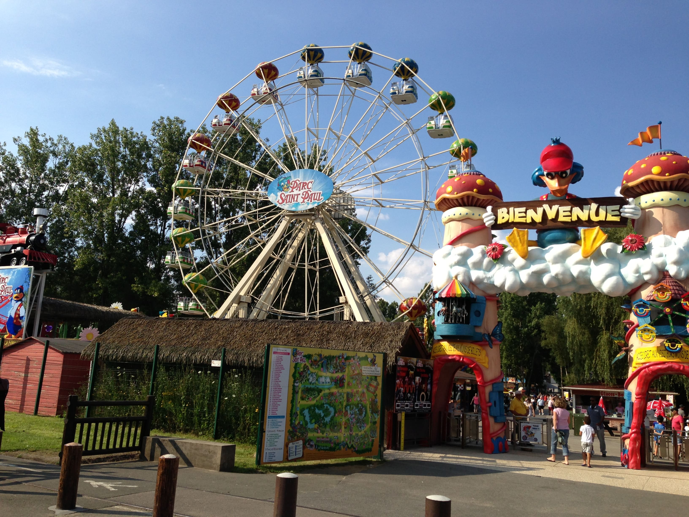
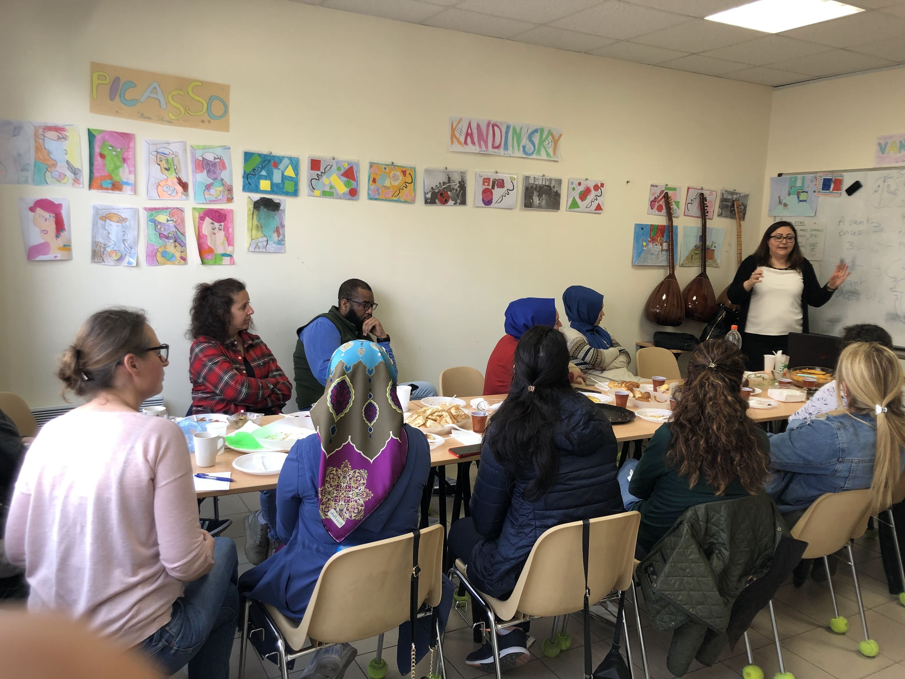
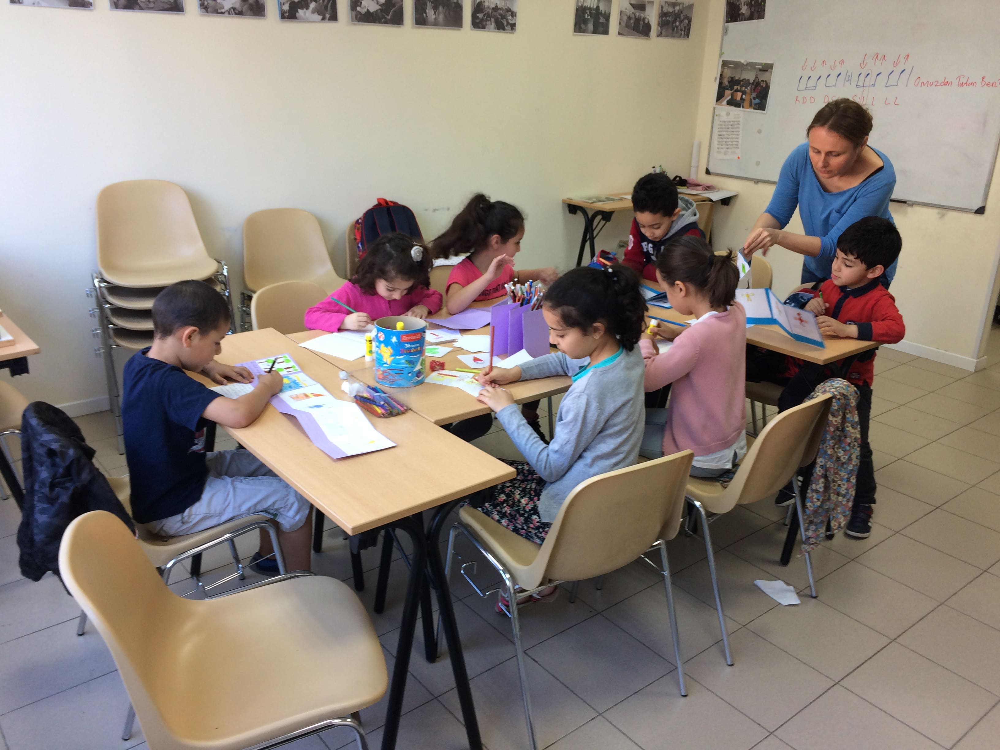
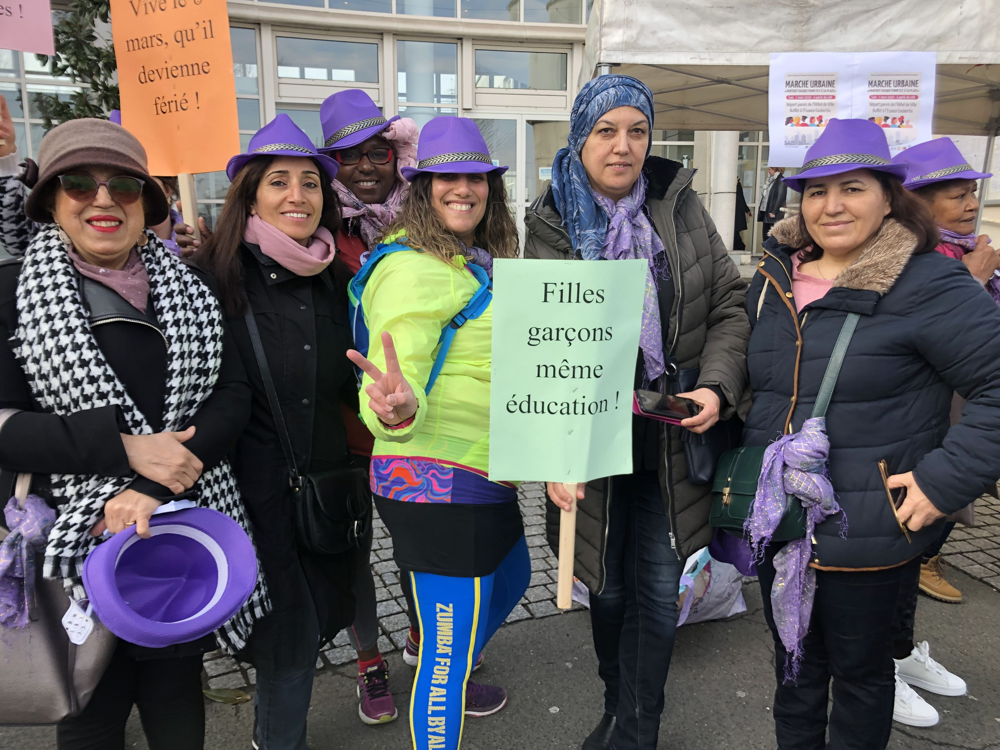
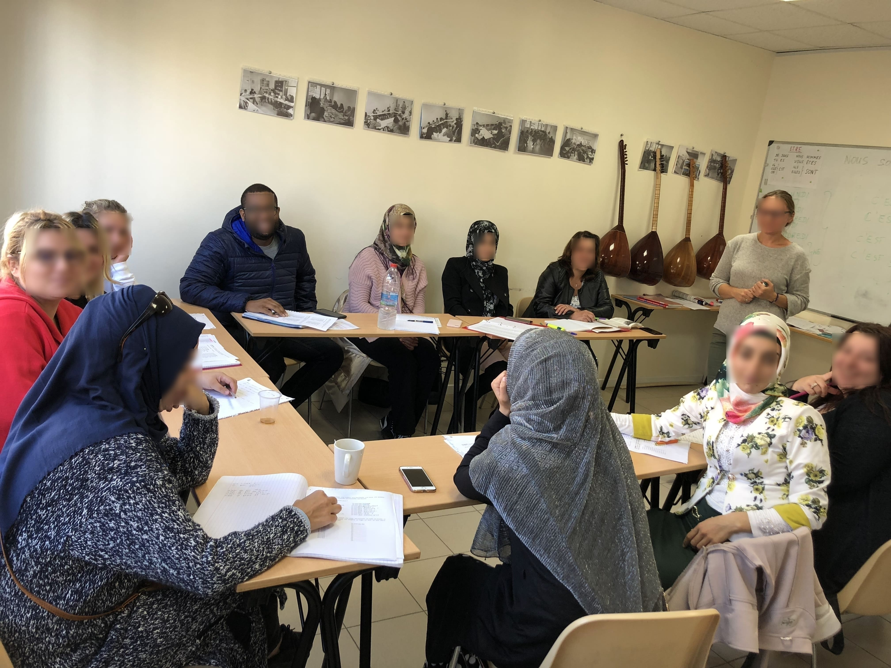
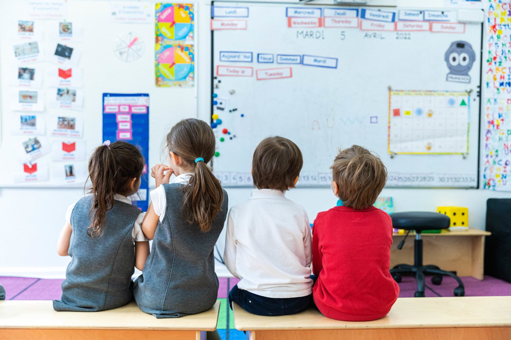
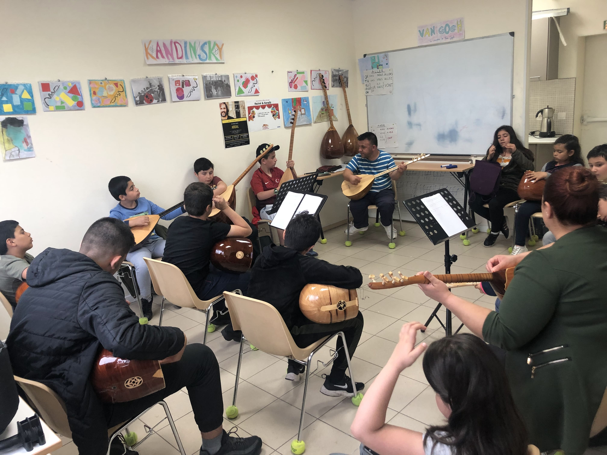
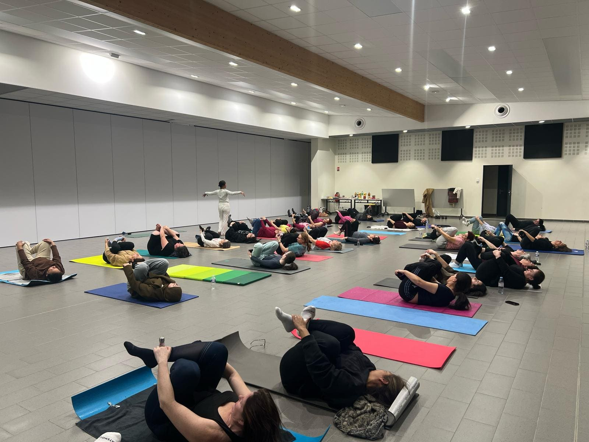

La Vie de l'Association
Retrouvez nos événements majeurs, nos sorties familiales et les moments forts de notre communauté.






Nos Cours & Ateliers
Des activités variées pour les enfants, les jeunes et les adultes.

AdultesCours de Français
Des cours bienveillants pour accompagner les adultes dans l'apprentissage et le perfectionnement de la langue française.
Horaires :
- En semaine : 9h00 - 11h00 et 14h00 - 16h00
- Mardi et Vendredi : 19h15 - 20h15

ScolairesSoutien Scolaire
Accompagnement méthodique pour la réussite scolaire des élèves en semaine.
Horaires :
- Lundi, Mardi, Jeudi et Vendredi
- Primaires : 17h00 - 18h00
- Collégiens : 18h00 - 19h00
 Sciences
Sciences
Cours de Maths & Sciences
Soutien ciblé et suivi personnalisé individuel pour surmonter les difficultés en sciences.
Horaires :
- Samedi : Cours individuel de 9h à 14h
- Période de vacances : stage intensif de mathématiques

CultureCours de Saz
Atelier d'initiation et de perfectionnement à la pratique du Saz, instrument traditionnel au cœur de notre patrimoine culturel.
Horaires :
- Mercredi : 14h à 16h
- dimanche : 16h à 18h

Bien-êtreCours de Yoga
Séances de relaxation et d'entretien corporel pour se détendre et prendre soin de sa santé.
Horaires & Lieu :
- Jeudi à 13h30 dans la Salle Colucci
- Ouvert à tous au moyen d'une participation